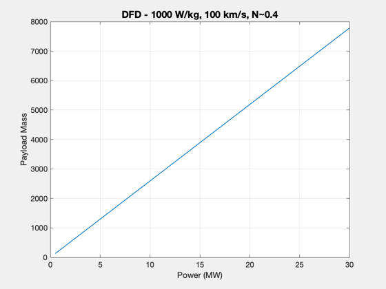
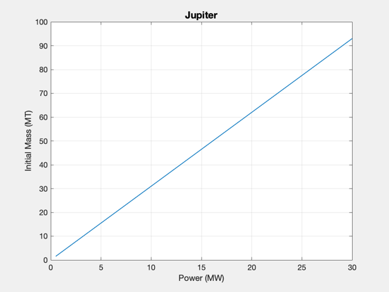
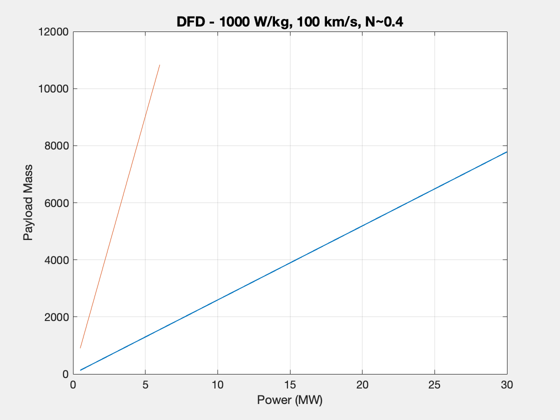
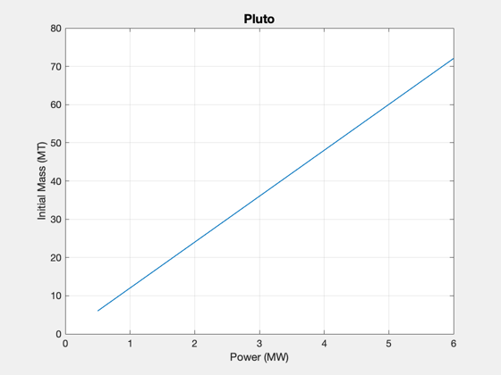
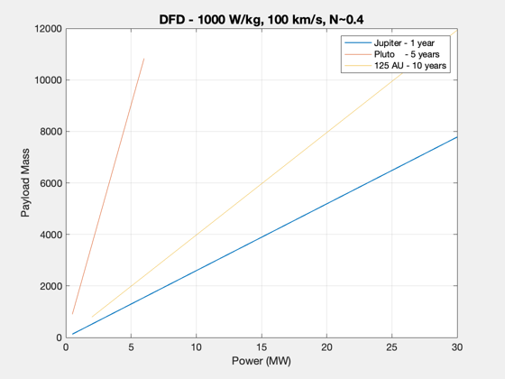
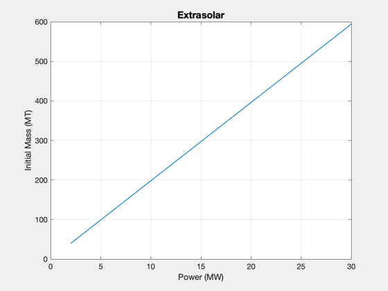

Contents
Mission capability chart using straight-line trajectories
Solve for 2D straight-line trajectories to Jupiter, Pluto, and 125 AU
See also: EngineThrust, ComputePayload, InitialMass, Straight2DStructure
%-------------------------------------------------------------------------- % Copyright (c) 2018 Princeton Satellite Systems, Inc. % All rights reserved. %-------------------------------------------------------------------------- % Constants year = 365.25*86400; % s au = Constant('au'); % km % Engine parameters d = Straight2DStructure; d.f = 0.05; % kg tank/kg fuel d.eta = 0.4; % efficiency to jet thrust d.sigma = 1000; % W/kg d.uE = 120; % km/s d.mE = [];
Jupiter
T/W is 2.01e-3 m/s2
d.dF = 5.2*au; d.tF = 1*year; [lambda,alpha] = ComputePayloadFraction(d); % Power range, MW powers = linspace(0.5,30,30); mPJ = alpha*powers*1e6; m0 = mPJ/lambda; TW(1) = EngineThrust(powers(1)*1e6, d)./m0(1); hF = Plot2D(powers,mPJ,'Power (MW)','Payload Mass','DFD - 1000 W/kg, 100 km/s, N~0.4'); hold on; hA = gca; Plot2D(powers,m0/1e3,'Power (MW)','Initial Mass (MT)','Jupiter') 
Pluto
T/W is 5.05e-4 m/s2 for 5 years
d.dF = 40*au; d.tF = 5*year; [lambda,alpha] = ComputePayloadFraction(d); powers = linspace(0.5,6,30); mPP = alpha*powers*1e6; m0 = mPP/lambda; TW(2) = EngineThrust(powers(1)*1e6, d)./m0(1); plot(hA,powers,mPP) Plot2D(powers,m0/1e3,'Power (MW)','Initial Mass (MT)','Pluto') 
Extrasolar
T/W is 2.9e-4 Check the values of payload mass - this says 1000 kg can go to 125 AU with these engine parameters but the thrust solver says a uE of 120 km/2 is needed.
d.dF = 125*au; d.tF = 10*year; [lambda,alpha] = ComputePayloadFraction(d); powers = linspace(2,30,30); mPE = alpha*powers*1e6; m0 = mPE/lambda; TW(3) = EngineThrust(powers(1)*1e6, d)./m0(1); plot(hA,powers,mPE) Plot2D(powers,m0/1e3,'Power (MW)','Initial Mass (MT)','Extrasolar') legend(hA,'Jupiter - 1 year','Pluto - 5 years','125 AU - 10 years') disp(table(TW','RowNames',{'Jupiter','Pluto','Extrasolar'},'VariableNames',{'T/W (m/s2)'})) %-------------------------------------- % $Id: 8b6287a25a09716d55ee4e565d93417a360b1cb7 $
T/W (m/s2)
__________
Jupiter 0.0021503
Pluto 0.00055509
Extrasolar 0.00033659
 